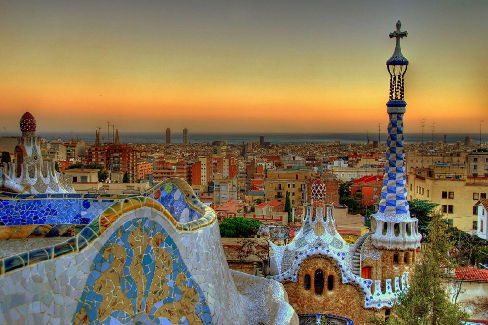
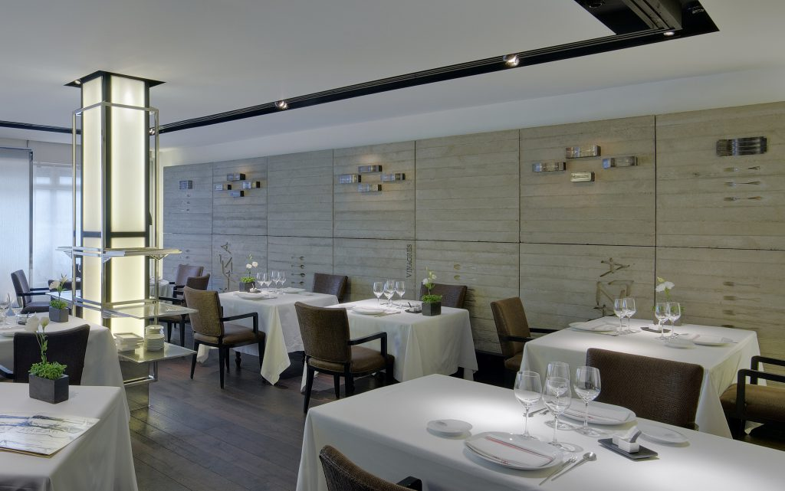
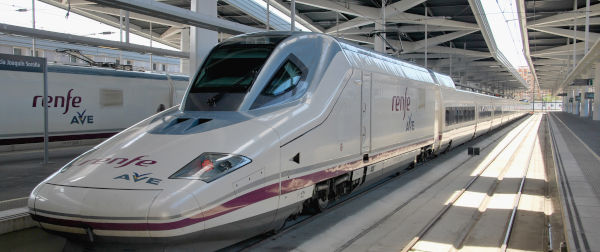

Lieux touristiques
The Alhambra and Generalife Gardens, ce palais de plaisir mauresque vous coupera
le souffle. Le palais royal de la dynastie nasride est le point culminant artistique
de la période islamique espagnole, lorsque Al-Andalus - comme ils l'appelaient
l'Andalousie - représentait l'incarnation de la culture et de la civilisation
au Moyen Âge en Europe, après le grand endroit, nous avons Barcelone Sagrada
Familia et Gaudi Sites, Antoni Gaudi a pris le style architectural connu sous le nom
d'Art Nouveau un pas plus loin, même, certains ont argué, dans l'absurdité. Les
bâtiments fantaisistes et scandaleux qu'il a créés à Barcelone sont devenus des
monuments, les attractions emblématiques de cette ville catalane.

Hôtels et restaurants
en termes de nourriture , l'Espagne n'a pas beaucoup de repas traditionnels , mais
ils ont les meilleurs restaurants avec les meilleurs chefs dans le monde et ici
certains des must go :
Arzak litaraly le meilleur au monde , Martin Berasategui

Transport
Les transports publics en Espagne ont tout, des trains à grande vitesse qui roulent
à plus de 300 km/h aux tramways centenaires qui sillonnent les rues médiévales.
L'Espagne regorge de grandes villes dotées de systèmes de transports publics.